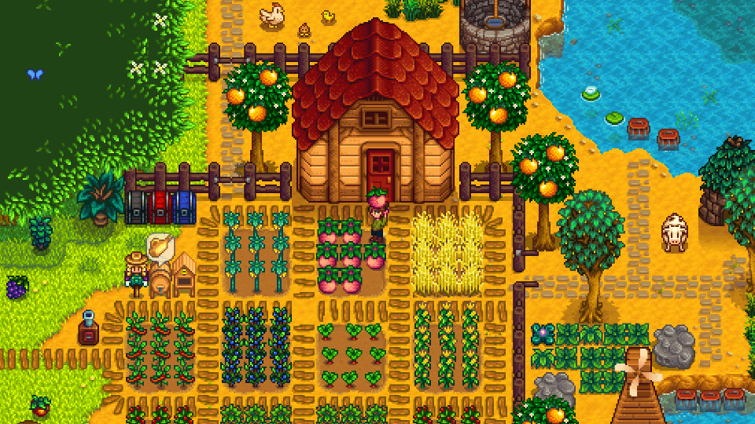

Game Summary
Stardew Valley is a farming and life simulation game that also contains adventure, building relationships, completing challenges, and a storyline aimed at restoring the town to its fullest potential with different tasks after Joja Corporation takes over a part of it. The game begins with the option for the player to customize their character and choose from various farm layouts. The story starts off as the player who inherits their late grandfather’s farm, leaving behind their city corporate job. From there, the player moves to their new home on the farm and begins meeting the townspeople of Stardew Valley. The game involves a wide range of activities including farming, tending to animals, crafting and building, mining, and socializing with the town characters. The game is structured in the four seasons, each lasting 28 in-game days. Every season brings holidays, events, and festivals hosted by the town. Festivals and holidays offer community activities, while the calendar posts townspeople’s birthdays, giving players the opportunities to strengthen relationships more quickly. In this game, the player can move at their own pace either focusing on their farm, achieving 100% perfection, restoring the Community Center or going the corporate route and buying the JojaMart membership and replacing the Community Center. There are choices in-game that players can make that lead to different situations and outcomes, allowing them to shape the game as they like. Whether the player focuses on farming, exploring the mines, fishing, building friendships, or completing quests, every task contributes to overall progress in the game’s storyline. In Stardew Valley, the player has a lot of freedom and is often described as a “sandbox” game, where players can decide what they would like to focus on since each season, and events repeat year after year in the game making it as relaxing or as adventurous as they want.
